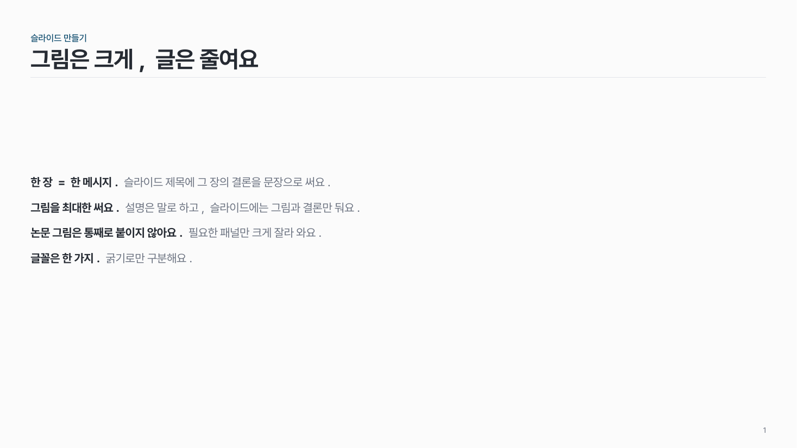
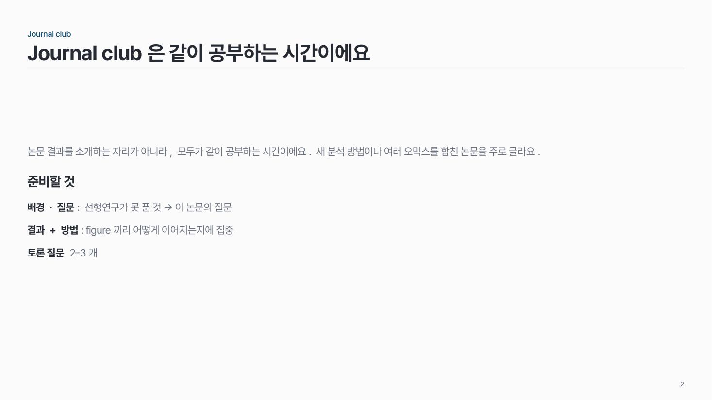

문장 목록 text-01
짧은 문장 몇 줄. 줄 앞 몇 단어만 진하게, 나머지는 중간 회색.

이 시안
문장만 · 줄 앞 몇 단어 진하게
슬라이드 제목: 그림은 크게, 글은 줄여요
언제 쓰나
제목 없이 짧은 문장 몇 줄로 충분할 때요. 안내, 주의할 점, 한 단락 정도의 설명에 맞아요.
구성
- 필요하면 위에 소제목 한 줄.
- 문장을 한 줄씩. 줄 앞 핵심 몇 단어만 진하게.
시안 비교
같은 내용을 옵션만 바꿔 그렸어요. 그림을 누르면 크게 보여요.
A문장만 · 줄 앞 몇 단어 진하게
슬라이드 제목: 그림은 크게, 글은 줄여요

B소제목 없는 문장 + 소제목 있는 문장
슬라이드 제목: Journal club은 같이 공부하는 시간이에요